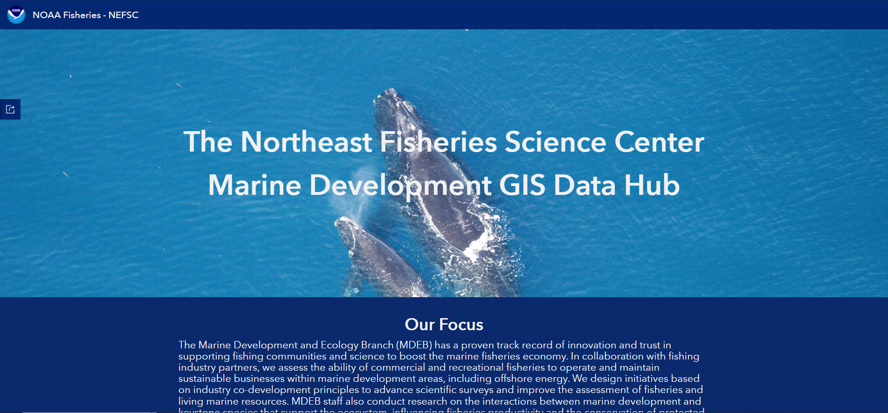
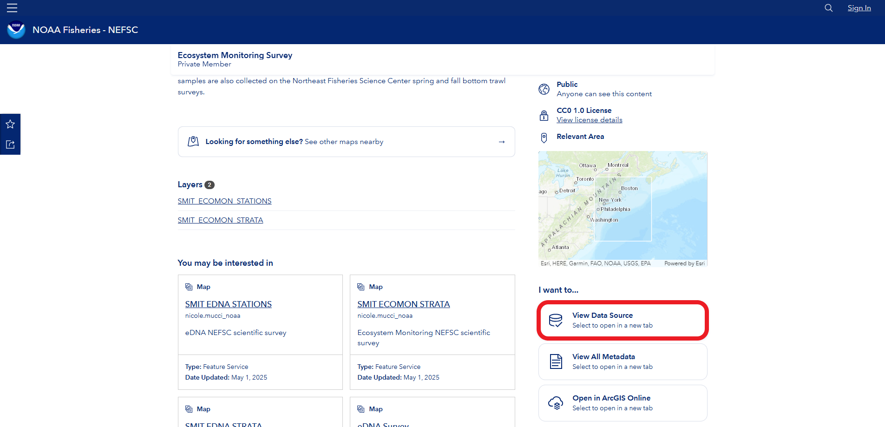
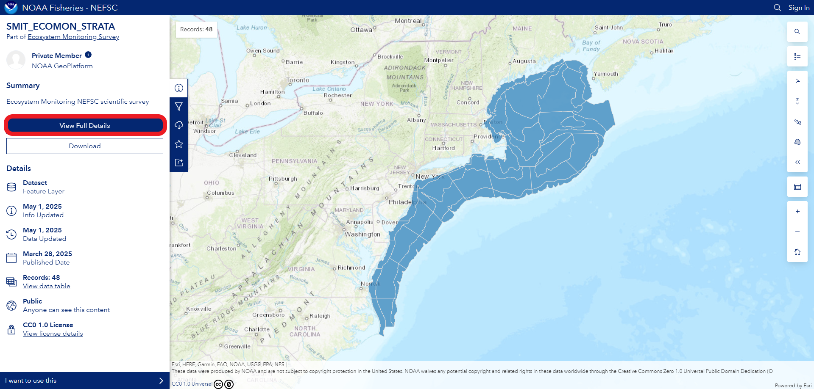
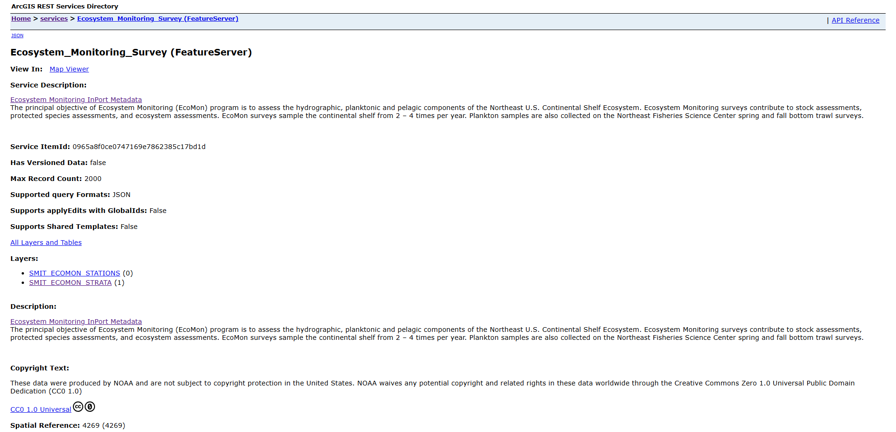
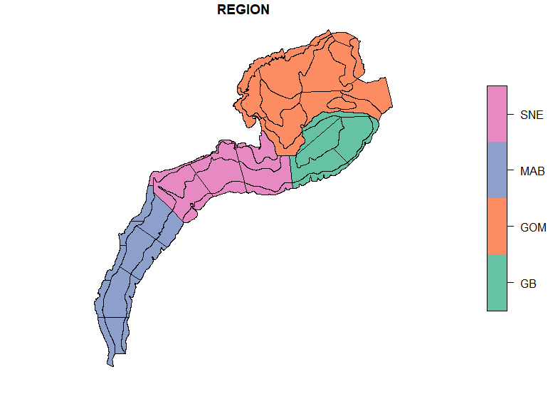
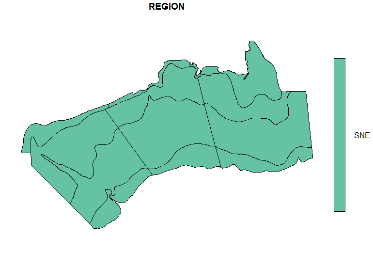

install.packages("arcgis", repos = c("https://r-arcgis.r-universe.dev", "https://cloud.r-project.org"))Connecting R and AGOL
To connect R with ArcGIS Online (AGOL) you will need to use ESRI’s R-ArcGIS Bridge, a collection of R packages that integrates R with ArcGIS. The easiest way to install the R-ArcGIS Bridge is to install the {arcgis} metapackage,
It is recommended that you have the newest version of R installed, with a minimum R version of 4.3 or higher.
Once you have installed {arcgis} you can load all the packages using,
library(arcgis)This will load:
- arcgisutils
- arcgislayers
- arcgisgeocode
- arcgisplaces
The rest of this tutorial will show you how to 1) find a feature layer url on the MDEB GIS Data Hub and 2) read in the data from that feature layer.
Find a feature layer url
Navigate to the MDEB GIS Data Hub.

Find the survey that you’re interested in by using the Content library or the Content gallery. For this tutorial, we will use the Content library to focus on the Ecosystem Monitoring Survey (EcoMon). Once on EcoMon’s About page, scroll down to the I want to... section and click on the View Data Source link.

If you find yourself on the Explore page instead, don’t worry. You can navigate to the About page by clicking on the View Full Details button.

After you click the View Data Source link, you will be brought to the feature service page.

Copy the url in the address bar and store it in an R object, this is the url of the remote resource (feature service) that you will need for the next section of this tutorial.
## url for EcoMon Strata feature layer
ecomon_url <- 'https://services2.arcgis.com/C8EMgrsFcRFL6LrL/arcgis/rest/services/Ecosystem_Monitoring_Survey/FeatureServer/1'Read in data from a feature layer
Now we will use the arc_read() function to extract the data from the EcoMon Strata feature layer and store the results in an R object called ecomon_strata.
## Download EcoMon Survey strata from the MDEB GIS Data Hub
ecomon_strata <- arc_read(url = ecomon_url)
ecomon_strata
#> Simple feature collection with 48 features and 11 fields
#> Geometry type: POLYGON
#> Dimension: XY
#> Bounding box: xmin: -75.96791 ymin: 35.14219 xmax: -65.16869 ymax: 44.48558
#> Geodetic CRS: NAD83
#> First 10 features:
#> OBJECTID SURVEY_NAME NUMOFPOLY NUMOFSTA REGION AREA TYPE ACRES Shape__Area Shape__Length
#> 1 1 Ecosystem Monitoring Survey 1 1 MAB 1540.432 SB 380709.0 0.1540434 2.314193
#> 2 2 Ecosystem Monitoring Survey 1 2 MAB 4496.485 MS 1110526.3 0.4498022 3.273956
#> 3 3 Ecosystem Monitoring Survey 1 2 MAB 3190.414 IS 788464.8 0.3184615 3.374652
#> 4 4 Ecosystem Monitoring Survey 1 1 MAB 2510.323 SB 620508.7 0.2548203 3.274308
#> 5 5 Ecosystem Monitoring Survey 1 5 MAB 9620.144 MS 2378814.2 0.9760387 4.144637
#> 6 6 Ecosystem Monitoring Survey 1 2 MAB 2726.496 IS 673994.9 0.2762439 3.118843
#> 7 7 Ecosystem Monitoring Survey 1 2 MAB 4804.352 SB 1187883.9 0.4939513 4.031104
#> 8 8 Ecosystem Monitoring Survey 1 4 MAB 8095.956 MS 2001253.5 0.8353470 3.985027
#> 9 9 Ecosystem Monitoring Survey 1 1 MAB 2391.726 IS 591364.0 0.2455178 2.838412
#> 10 10 Ecosystem Monitoring Survey 1 3 MAB 4720.303 SB 1167316.5 0.4908978 3.187865
#> STR_NAME geometry
#> 1 1 POLYGON ((-74.76881 36.5052...
#> 2 2 POLYGON ((-74.81583 36.5052...
#> 3 3 POLYGON ((-75.72364 36.5060...
#> 4 4 POLYGON ((-74.3466 37.56465...
#> 5 5 POLYGON ((-74.63893 37.7118...
#> 6 6 POLYGON ((-75.54484 37.5418...
#> 7 7 POLYGON ((-73.38887 38.4968...
#> 8 8 POLYGON ((-74.44489 39.0486...
#> 9 9 POLYGON ((-74.93782 38.5007...
#> 10 10 POLYGON ((-72.7857 39.20539..
## Plot
plot(ecomon_strata['REGION'])
You can also use SQL where clauses to limit the number of rows returned from the hosted feature layer, especially if you only need a subset of the data. This can be very efficient, as reading a subset of the data into memory will be faster and less costly, relative to reading in the entire dataset (if you don’t need the entire dataset).
## Query for only SNE strata
ecomon_sne <- arc_read(url = ecomon_url, where = "REGION = 'SNE'")
plot(ecomon_sne['REGION'])
You can also select a subset of columns or fields to return from the feature layer, just populate the fields argument in the arc_read() function.